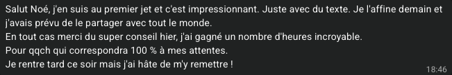
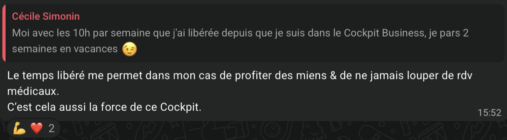

Jérémy B.
Architecte SI / Cloud, freelance
+10hpar semaine

Black Friday · jusqu'au vendredi 27 novembre, minuit
T'as pris l'abonnement ChatGPT, t'as testé des prompts, et t'as toujours pas récupéré une seule heure ? C'est normal : tu bosses pour l'IA au lieu qu'elle bosse pour toi. Le Cockpit Business t'installe ton bras droit IA. Il connaît ta boîte, il sait faire tes tâches, il agit tout seul. Objectif : 14h récupérées par semaine, en 30 jours.
Soit 3 000 € TTC en une fois, ou 3 mensualités de 833,33 € HT. Retour à 3 200 € HT samedi.
Plus que 20 places à ce prix.
Le prix Black Friday est terminé. Tu peux toujours réserver un diagnostic de 45 minutes pour voir si le programme est fait pour toi.


Ce que je te donne
Tu ne pars pas de zéro, et tu ne repars pas avec du travail en plus. Tu récupères les agents IA qui font tourner mon activité, puis je t'apprends à créer ceux dont la tienne a besoin.
01
Ceux que j'utilise tous les jours. Tu les branches sur ton activité dès la première semaine.
02
Ton activité a des tâches que personne d'autre n'a. Je t'apprends à construire les agents qui les prennent en charge, sans coder.
Tu repars autonome, pas dépendant de moi.
Tu utilises un outil puissant sans méthode.
Et un outil puissant sans méthode, ça donne des résultats ponctuels et une déception durable.
La preuve
Elaine L., en trois vidéos
Leurs messages, en entier
Jérémy B.
Architecte SI / Cloud, freelance
+10hpar semaine
Diane L.
Consultante IA et transformation digitale
+7hpar semaine

Michel Q.
Conseiller en gestion de patrimoine
+2h30par semaine

Ce qu'ils en disent, à chaud
Messages reçus pendant le programme.




Le mécanisme
Trois étapes — clarifier, automatiser, piloter. Et trois choses que tu récupères au passage : la lucidité, la capacité, le choix.
C
Tu vois enfin où part ton temps.
D'abord, la luciditéTu sais combien d'heures sont récupérables, lesquelles, et dans quel ordre les lâcher. Tu arrêtes de deviner ce qui te coûte du temps : tu le lis.
A
C'est là que les heures reviennent.
Puis, la capacitéTu ne gagnes pas trois automatisations. Tu gagnes l'équivalent d'un collaborateur qui connaît tes dossiers, écrit dans ton style et ne demande ni salaire ni formation. Mails, comptes-rendus, veille, relances, propositions : tout ce qui est répétable part sans toi.
P
Tu passes de l'autre côté.
Enfin, le choixTon activité tourne quand tu n'es pas devant. Et les heures récupérées, c'est toi qui décides quoi en faire : les remettre dans ton business pour aller chercher de la croissance, ou les rendre à tes proches.
Ce que c'est
Ce que ça n'est pas
Portrait — assets/img/noe/portrait.jpg
Ton formateur
Je n'ai pas appris à travailler avant l'IA pour ensuite essayer de l'y greffer — j'ai construit ma façon de travailler avec elle dès le départ. C'est pour ça que CAP n'est pas un rafistolage : c'est une méthode native.
Aujourd'hui je dirige PRCZ, une agence de stratégie IA pour PME. J'ai cartographié le temps de dizaines de solopreneurs et de cadres : entre 30 et 40 % de leur semaine était délégable. Et mon activité continue de tourner quand je suis à l'autre bout du monde — ce n'est pas un argument de style de vie, c'est la seule preuve qui compte : le système fonctionne sans moi.
Ce que je ne fais plus moi-même
68 heures par semaine, au total.
Black Friday
Juste en dessous, le programme complet, module par module. Et le prix Black Friday tient jusqu'à vendredi minuit.
Ce que les membres construisent
Quelques exemples construits par des membres du Cockpit Business. Sur les tâches qu'ils ont confiées à leurs agents, le temps passé baisse d'environ 76 % en moyenne.
Ces agents-là, des membres les ont construits pendant le programme pour leurs propres tâches : c'est ce que tu apprends à faire, en plus des agents que je te fournis. Les gains indiqués sont ceux mesurés par la personne citée ; les tiens dépendront de ton point de départ.
Exemple
Chaque lundi et mercredi à 7h, il trouve les entreprises de ta cible, rédige le premier message et la relance, et t'envoie le récapitulatif par mail.
1,5 jour → 30 minpour 19 prospects qualifiés
Jérémy B., architecte SI / Cloud
Exemple
Il garde la trace de chaque client et de chaque échange : plus personne n'est oublié.
+30 minpar jour
Michel Q., conseiller en gestion de patrimoine
Exemple
Après un bilan avec un client, il rédige le mail de suivi et la proposition commerciale.
1 jour → 2hpar proposition
Camille R., consultante en stratégie commerciale
Exemple
Il suit tes sources, trie l'information et te livre la synthèse utile pour ton activité.
5h → 1hpar semaine
Thomas L., formateur indépendant
Exemple
Il trie ta boîte, repère les demandes prioritaires et prépare les brouillons de réponse.
2h → 30 minpar semaine
Sarah M., freelance en communication
Exemple
Après tes rendez-vous et ateliers, il rédige et met en forme les comptes-rendus.
5h → 1hpar semaine
Julien D., consultant en management
Exemple
Il dérushe, découpe les séquences et ajoute les sous-titres de tes vidéos.
4h → 1hpar vidéo
Inès B., solopreneure et créatrice de contenus
Exemple
Il prépare tes rendez-vous, trouve les créneaux et anticipe les besoins de tes clients.
2h → 30 minpar semaine
Hugo F., consultant freelance
Le point de départ, avant même de commencer CAP.
Module 0 — Fondations
Comprends ce que tu as entre les mains
Le point de départ : Claude installé, et une première vraie conversation qui produit un résultat concret sur ton travail. Tu sais ce qu'il sait faire — et ce qu'il ne fait pas.
Télécharger et configurer Claude Desktop (pas la version navigateur). Créer son compte et activer Claude Pro. Comprendre pourquoi l'app native est indispensable pour la suite.
Ce que tu en sorsClaude Desktop installé, compte Pro activé, première session ouverte.
Démystifier l'IA sans jargon. Comprendre comment Claude traite l'information, ce qu'il peut faire seul et ce qui nécessite ta direction. Les 3 erreurs les plus fréquentes des nouveaux utilisateurs.
Ce que tu en sorsClarté sur ce qu'on peut attendre de Claude — et ce qu'on ne peut pas.
Lancer sa première vraie conversation. Comprendre les Projets Claude (espace de travail persistant) et la mémoire entre sessions. Configurer son premier Projet avec ses instructions de base.
Ce que tu en sorsPremier Projet Claude créé avec instructions personnalisées.
La fenêtre de contexte expliquée simplement. Pourquoi Claude « oublie » entre les conversations et comment anticiper ce comportement. Les bonnes pratiques pour ne jamais perdre son contexte.
Ce que tu en sorsComprendre le comportement de Claude pour ne plus être surpris.
Tu vois enfin où part ton temps.
Étape C · Cartographier ta semaine
Le vrai coût de travailler seul
En vingt minutes de conversation, ta semaine est écrite tâche par tâche. Tu sais enfin combien d'heures tu peux récupérer — et lesquelles.
Comprendre les 3 catégories de tâches : D (Délégables à Claude), P (Procédurables — Claude suit une procédure), H (Humain uniquement — réflexion, relation, décision). Le concept de charge mentale comme coût invisible. Calcul du chiffre de départ : heures D + 50 % des heures P.
Ce que tu en sorsComprendre pourquoi l'audit est la première étape non négociable.
Claude joue le rôle d'un consultant-journaliste : il pose des questions structurées en 4 phases (ancrage mémoire → macro → micro → coûts cachés), relance les réponses vagues, et produit automatiquement le tableau D/P/H complet avec charge mentale, patterns récurrents et chiffre de départ. Minimum vingt minutes de conversation pour un audit profond.
Ce que tu en sorsTableau D/P/H complet de sa semaine + chiffre de départ calculé.
Étape C · Analyser et prioriser
De l'audit à la cartographie
Tu repars avec ton plan sur 30 jours : les tâches qui te rendent le plus d'heures, dans l'ordre où les confier à Claude.
Claude sélectionne les meilleures tâches D et P selon impact/effort. Pour chaque tâche : formulation de la problématique métier en une phrase concrète + assignation de la solution Claude exacte (prompt SID · template réutilisable · Projet BRAIN + mémoire · skill · connecteur MCP · tâche planifiée · Claude Browser). Tableau final trié : toutes les D d'abord, puis toutes les P. Identification des 2 à 3 tâches H à ne jamais déléguer.
Ce que tu en sorsTableau de sélection : tâche · problématique métier · solution Claude · effort setup.
Claude génère une roadmap dynamique sur mesure — pas un template à 4 semaines fixes. Séquencement : phase D d'abord (setup le plus rapide au plus lent), puis phase P. Cap strict : 3 à 4 h de setup max par semaine, jamais deux chantiers complexes la même semaine. Pour chaque tâche : semaine d'implémentation, setup estimé, impact récupéré. Ce qui dépasse 30 jours part au prochain cycle CAP.
Ce que tu en sorsRoadmap personnalisée séquencée semaine par semaine avec impacts estimés.
Claude génère en un seul prompt la cartographie globale complète : profil de travail · audit D/P/H · sélection et solutions Claude · roadmap · indicateurs de suivi · premier geste. En markdown propre et en PDF mis en page. Ce PDF se colle dans les instructions du Projet — Claude le lit avant chaque conversation.
Ce que tu en sorsPDF de cartographie globale sauvegardé dans les instructions du Projet Claude.
C'est là que les heures reviennent.
Étape A · Déléguer les premières heures
Tes premières heures récupérées. Cette semaine.
Tes premières tâches confiées dès cette semaine : rédaction, comptes-rendus, propositions. Claude écrit avec ta voix et applique tes procédures, du premier coup.
Bloc 1 — La méthode SID et les templates
La méthode SID (Situation · Intention · Détails) — pas une formule magique, une manière de penser sa demande avant de l'écrire. S = qui tu es, ton contexte ; I = l'objectif précis, pas « aide-moi » ; D = contraintes, format, ton, exclusions. Démonstration comparée : même tâche avec et sans SID.
Ce que tu en sorsTemplate SID universel à conserver dans son Projet Claude.
Un bon prompt prend du temps à écrire — il faut le réutiliser. Un template = un prompt SID avec des [variables] à remplacer. Logique de construction, exemples pratiques (email de suivi prospect, compte-rendu, brief). Où stocker ses templates.
Ce que tu en sors3 templates SID personnalisés pour ses 3 tâches les plus fréquentes.
Bloc 2 — Projets, BRAIN et mémoire
Claude par défaut = conversation sans mémoire. Les Projets règlent ce problème : espace de travail persistant avec mémoire partagée entre toutes les conversations du projet. Cas d'usage : un Projet par client, par chantier IA.
Ce que tu en sorsSon Projet Claude configuré avec ses instructions de base.
Le dossier BRAIN : un dossier sur son ordinateur que Claude lit au début de chaque session. Il est chez toi, pas dans le cloud. Analogie : un collaborateur qui a lu ton dossier avant de commencer. Présentation des 3 fichiers clés.
Ce que tu en sorsStructure du dossier BRAIN créée sur son ordinateur.
Les 3 fichiers qui donnent ta voix à Claude. profil.md : qui tu es professionnellement. offres.md : ce que tu vends. style.md : comment tu communiques, avec des extraits de vrais écrits. Astuce : utiliser Claude pour t'aider à rédiger tes propres fichiers.
Ce que tu en sorsLes 3 fichiers remplis et sauvegardés dans le dossier BRAIN.
Ce que sont les tokens sans jargon technique. Pourquoi la fenêtre de contexte a une limite et ce que ça implique concrètement. Comment ne pas surcharger son Projet avec des documents trop lourds.
Ce que tu en sorsComprendre comment optimiser son espace de contexte.
La mémoire = des post-its permanents sur toi, actifs dans toutes tes conversations. Différence mémoire / Projet / BRAIN : universel et permanent · spécifique à un chantier · chargé à la demande.
Ce que tu en sorsAu moins 3 mémorisations clés configurées dans Claude.
Bloc 3 — Les skills
Les skills = des procédures pré-configurées qu'on appelle pour exécuter une tâche complexe d'un seul ordre. Plutôt que de réexpliquer comment faire un compte-rendu à chaque fois, on crée une fiche procédure que Claude suit automatiquement.
Ce que tu en sorsIdentifier ses 3 tâches candidates avant le chapitre suivant.
En pratique : créer un skill de A à Z. Définir le déclencheur, l'entrée attendue, la sortie produite et la logique d'exécution. Test en direct sur une vraie tâche. Mesurer le temps gagné.
Ce que tu en sorsPremier skill configuré et testé sur une vraie tâche récurrente.
Étape A · Automatiser sans toi
Ton système tourne sans toi. Même la nuit.
Tes mails triés, ta veille livrée, tes relances envoyées : les tâches récurrentes s'exécutent sans toi, à heure fixe, même la nuit. C'est ici que naissent tes agents.
Bloc 1 — Connecteurs MCP
MCP est le standard qui branche Claude directement sur tes outils. La différence est simple : sans connecteur, Claude te conseille sur tes emails ; avec, il les lit, les trie et prépare les réponses. On pose la carte de ce qui est branchable aujourd’hui, et dans quel ordre le faire.
Ce que tu en sorsLa carte des connecteurs : ce que tu branches, dans quel ordre, et l’heure gagnée derrière chacun.
Les connecteurs natifs : ceux qui s’installent en deux clics, sans une ligne de code. Gmail, Calendar, Drive, Notion, ClickUp, Slack. Le principe d’abord, puis l’installation en direct — sur tes propres comptes, pas sur un environnement de démonstration.
Ce que tu en sorsTes outils du quotidien connectés et testés sur tes vraies données.
Ton outil métier n’a pas de connecteur officiel ? Les connecteurs personnalisés et Zapier MCP ouvrent la porte au reste de ton stack : CRM, facturation, base clients, outil interne. Théorie puis mise en place sur ton propre cas.
Ce que tu en sorsUn connecteur monté sur un outil qui n’en avait pas.
Le connecteur Apify laisse Claude collecter de la donnée sur le web à ta place : veille concurrentielle, listes de prospects, prix, contenus publiés. Pour ceux qui veulent aller au bout, la création de serveurs MCP sur mesure est traitée en fin de bloc — chapitre technique et entièrement optionnel : il n’entre pas dans le chemin des 14 heures.
Ce que tu en sorsUne collecte de données qui tourne sans toi, sur le sujet de ton choix.
Bloc 2 — Tâches planifiées
Des actions que Claude exécute à heure fixe, sans que tu sois présent. Différence entre demander à Claude de faire quelque chose et Claude qui le fait automatiquement à 8h chaque lundi. Cas d'usage : briefing du matin, résumé de boîte email, rapport hebdomadaire.
Ce que tu en sorsComprendre quelles tâches se prêtent à la planification.
Configurer une tâche planifiée de A à Z : choisir le déclencheur, écrire le prompt, tester l'exécution. Exemple fil rouge : le briefing du lundi matin — Claude lit l'agenda de la semaine, les emails non traités, les priorités, et envoie un résumé chaque lundi à 8h.
Ce que tu en sorsPremière tâche planifiée opérationnelle.
Bloc 3 — Claude Browser
Claude qui agit sur le web à ta place. Il navigue, lit des pages, extrait des informations, remplit des formulaires. Installation de l'extension. Cas d'usage : veille sectorielle, extraction de données, recherche de prospects.
Ce que tu en sorsExtension installée et première action web exécutée.
Construire un système de veille automatique : Claude visite des sources définies, extrait les informations pertinentes, les résume selon tes critères. Combiner Claude Browser et tâche planifiée pour une veille entièrement automatique.
Ce que tu en sorsSystème de veille automatique configuré sur ses sources prioritaires.
Bloc 4 — Système complet et revue
Assembler tous les éléments en un système cohérent : connecteurs MCP, tâches planifiées, Claude Browser, skills. Mapper chaque tâche de sa roadmap sur le bon outil. Créer les rituels quotidiens et hebdomadaires. Le système tourne, tu supervises.
Ce que tu en sorsSystème de délégation complet assemblé et documenté.
Point de contrôle à mi-chemin des 30 jours. Comparer ce qui a été mis en place avec la roadmap initiale. Identifier ce qui fonctionne, ce qui coince, ce qui doit être ajusté.
Ce que tu en sorsCartographie mise à jour avec les réalités du terrain à J+15.
Tu passes de l'autre côté.
Étape P · Mesurer et relancer
Mesure ce que tu as récupéré. Prépare le cycle suivant.
Tu compares ton point de départ à la réalité à J+30 : heures gagnées, marge, charge allégée. Puis tu choisis les prochains chantiers — la méthode continue après le programme.
Refaire l'audit D/P/H avec Claude trente jours après. Méthode de mesure objective : comparer les heures passées sur chaque tâche avant et après. Calculer les heures récupérées réellement — pas les estimées, les mesurées.
Ce que tu en sorsNouveau tableau D/P/H comparé à l'audit initial.
Calculer son retour réel : heures récupérées × valeur horaire. Comparer le chiffre de départ avec celui de J+30. Valoriser les gains à l'année. Identifier pourquoi certaines tâches ont sur- ou sous-performé.
Ce que tu en sorsCalcul complet : heures récupérées · valeur horaire · gain annuel estimé.
Relire le prochain cycle constitué à l'étape Clarifier. Identifier les tâches qui n'ont pas encore été traitées. Repérer les nouvelles tâches D/P qui ont émergé sur les trente jours.
Ce que tu en sorsListe des chantiers du cycle 2, priorisés et intégrés à la cartographie.
Ancrer les nouvelles habitudes : les rituels quotidiens et hebdomadaires avec Claude. Comment maintenir le système sans y penser. Préparer le cycle 2 : relancer CAP sur les tâches restantes. La méthode devient un réflexe.
Ce que tu en sorsRituels hebdomadaires configurés · cycle 2 planifié · cartographie finale.
Au-delà des modules
Communauté
Un réseau d'entrepreneurs qui partagent la même ambition. Tu n'avances plus seul : tu profites de l'intelligence collective du groupe, chaque jour.
L'effet réseau
Les membres résolvent en cinq minutes des problèmes qui te prendraient des heures seul.
Accompagnement
Un suivi direct pour ne jamais rester seul face à une difficulté. Chaque semaine, tu repars avec une avancée concrète sur ton propre système.
Personne ne reste bloqué
Impossible de caler plus d'une semaine : on débloque ton cas en direct au live suivant.
Leurs messages, en entier
Jérémy B.
Architecte SI / Cloud, freelance
+10hpar semaine
Diane L.
Consultante IA et transformation digitale
+7hpar semaine
Michel Q.
Conseiller en gestion de patrimoine
+2h30par semaine
La communauté en action
Des extraits réels des échanges entre membres.


Ce que tu obtiens
Prix Black Friday
Plus que 20 places à ce prix.
Le Black Friday est terminé. Le programme est revenu à 3 200 € HT.
Je rejoins à 2 500 € HTFais le calcul toi-même
Prends ton chiffre d'affaires annuel et divise-le par le nombre d'heures que tu bosses dans l'année. Si ton heure vaut 50 €, 14h par semaine, c'est 2 800 € par mois qui partent dans des tâches qu'un bras droit IA peut faire à ta place. Le vrai prix, ce n'est pas 2 500 €. C'est ce que tu continues de perdre chaque semaine où rien ne change.
Qualification
Si tu portes seul un volume de travail pensé pour plusieurs personnes, tu es exactement au bon endroit.
Questions
Jusqu'au vendredi 27 novembre à minuit, heure de Paris. Samedi, le programme revient à 3 200 € HT. Et il n'y a que 20 places à ce prix : quand elles sont parties, c'est fini, même avant vendredi.
Non. Le prix de 2 500 € HT est déjà appliqué sur la page de paiement. Tu cliques, tu remplis tes infos, c'est tout.
Oui. Sur la page de paiement, tu choisis entre 2 500 € HT en une fois (3 000 € TTC) ou 3 mensualités de 833,33 € HT, une tous les 30 jours.
Oui, une facture avec TVA est émise automatiquement à ton nom ou à celui de ta société au moment du paiement.
Tout de suite. Tu as accès aux modules dès le paiement, tu rejoins la communauté privée et tu es intégré au prochain mastermind hebdomadaire.
C'est exactement le problème qu'on traite. La première étape ne demande pas d'apprendre quoi que ce soit : elle demande de regarder où part ton temps. Tout le reste part de là.
Et tu ne pars pas de zéro : mes agents sont livrés prêts à brancher. Compte quelques heures par semaine sur le premier mois, le temps de les régler sur ton activité. Après, ce sont eux qui travaillent. Les modules sont des vidéos courtes, consommables quand tu veux, et le créneau du mastermind est calé chaque semaine sur les disponibilités du groupe.
Non. Tu récupères d'abord toute ma machine : mes agents de prospection, de veille, de tri des mails, d'agenda, de PowerPoint, juridique, commercial et de contenus LinkedIn et Instagram, prêts à brancher.
Ensuite, je t'apprends à créer les tiens pour ce qui est propre à ton activité. C'est ce qui te rend autonome : le jour où ton activité change, tu sais adapter tes agents sans moi.
Presque tout le monde ici est dans ce cas. Ce n'est pas l'outil qui a échoué, c'est l'absence de méthode : des prompts isolés, sans contexte métier et sans logique d'intégration. C'est précisément ce que corrige la méthode CAP.
Il n'y a pas de garantie de remboursement, et je préfère te le dire franchement. Si tu hésites, réserve plutôt un diagnostic de 45 minutes avant vendredi : si je vois que ce n'est pas pour toi, je te le dis.
Non. Aucune ligne de code.
La suite
01Continuer comme aujourd'hui : subir le volume, repousser ce qui compte, et payer 700 € de plus le jour où tu décideras enfin de t'y mettre.
02Ou rejoindre Le Cockpit Business cette semaine, à 2 500 € HT, et laisser ton bras droit IA reprendre tes premières heures dès lundi.
Plus que 20 places à ce prix.